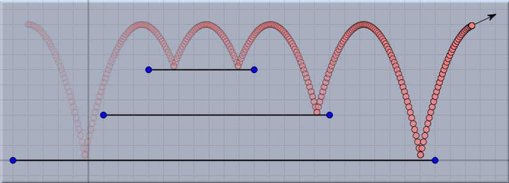
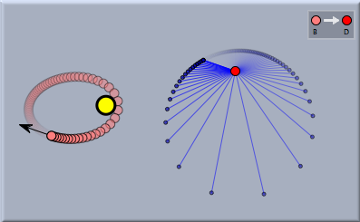
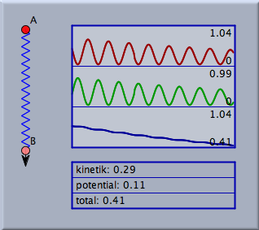
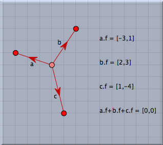

物理シミュレーション環境
以前の版と比較して、
シンデレラ２ は全く新しいアプリケーションの組み合わせを提供します。それは、物理の粒子と力のシミュレーションエンジンです。物理実験の図を描いてプレイボタンを押せば実験ができます。物理の要素を幾何学の要素と結合することができます。詳しい説明は
CindyLab の説明の中でおこない、ここでは概要だけを述べます。
物理シミュレーションの使用例
CindyLab は、物理シミュレーションのための環境です。それは、シンプルなだけでなく、非常に複雑な物理のシナリオを作成することが可能です。
仮想的な物理実験室
CindyLab の原理はシンデレラの幾何学部分とたいへんよく似ています。いくつかの作図モードと、図の振舞いを調べることのできる、動かすモードがあります。
CindyLab には、物理実験を行うためのいくつかのツールがあります。プレイボタンを押せば実験を行うことができます。図形の中の自由点を動かして実験を継続することもできます。
CindyLab は自由な筋書きで実験を行うのに便利です。びっくりするような結果を発見して他の実験をしてみたくなることもよくあります。
CindyLab にはあらかじめ定義された実験というものはなく、本当に仮想的な実験室だといえます。
解説のために使う
教育的な目的のために、
CindyLab はよく知られた物理的効果を例証する実験をするのに適しています。シミュレーション・エンジンは数値的にかなり正確ですので、多くの興味深い状況に対して信頼できる結果を示せます。特に、プログラミング言語CindyScript を使って、シミュレーションのパラメータを表示してそれを変更したりすることができます。
CindyLab で作ったものをHTMLページに書き出すこともできるので、インタラクティブな物理の練習問題を作るのも簡単です。
 |
| エネルギー保存の法則の実証 |
アプリケーションの範囲は、学生いくつかの状況に対してパラメータを調整してプレイボタンを押すという完全に準備された実験から、自由にオブジェクトをアレンジして行うオープンなシナリオにまで及びます。
シンデレラ２の設計と特徴
正確な数値解析
CindyLab のシミュレーションエンジンは、粒子と力のモデルに基づいています。動くことのできるそれぞれの点は、点のような粒子としてモデル化され、その相互作用は粒子間に働く力、または粒子と場としてモデル化されます。力は粒子を加速させます。
CindyLab の数値的なシミュレーションエンジンは、ルンゲ・クッタ法に基づいています。そのような数値解析の方法はいくつかあります。私たちは、数値的な信頼性、柔軟性、そして速度についてバランスのとれたものを選びました。
CindyLab で使われている特別な数値解析の方法は、 Dormand-Prince-45 というものです。シンデレラのパラメータを制御する
インスペクタ を使って、数値的な正確さを調整することが可能です。したがって、数値的に微妙なモデルを構築することもできるのです。
幾何学との共同作業
CindyLab は、シンデレラの幾何学部分やプログラミング言語
CindyScript と互いに行き来できるように設計されています。これによりいくつかの可能性が開けます。幾何学的な装飾をほどこすことによってシミュレーションの見栄えをよくすることができます。図形を描き足すことによって、シミュレーションの解析を行うこともできます。たとえば、次の図は、恒星の周りを回る惑星の分析をした例です。この状況下での速度ベクトルの隠された性質、すなわち、速度ベクトルの終点が円軌道を形成することを明らかにしています。幾何学的な分析は、速度ベクトルの始点を定点に写すという単純な移動によってなされました。
 |
| 恒星/惑星の速度ベクトルの分析 |
スクリプトとの共同作業
同じように、
CindyLab は
CindyScript と相互に関係しています。シミュレーションのパラメータを読み出し、そのいくつかは直接操作することができます。これにより、実験の数値解析を可能にします。
CindyScript には、
CindyLab との共同作業のために設計された演算子があります。特に、物理変数の値の変化をグラフで表したり、力の場の力線を描いたりすることができます。
 | |
 |
| 調和振動子 | |
力のつり合い |
物理学とスクリプトの相互作用は、多種多様なアプリケーションを可能にします。 特に、
CindyLab と
CindyScript で制御される物理的なロボットをシミュレートすることができます。